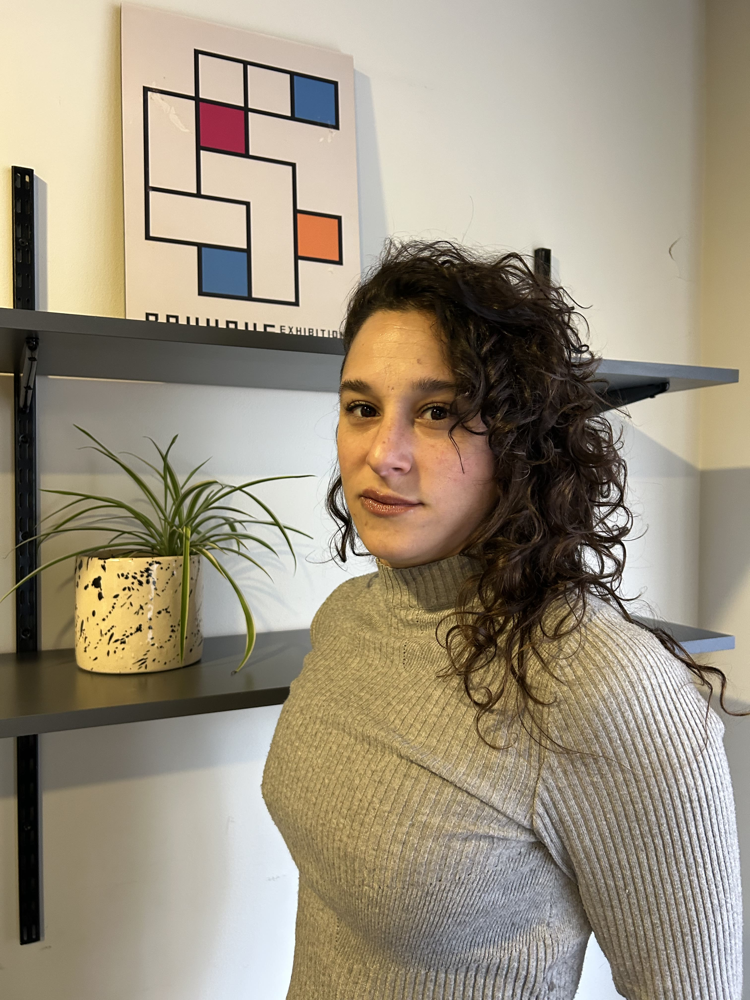
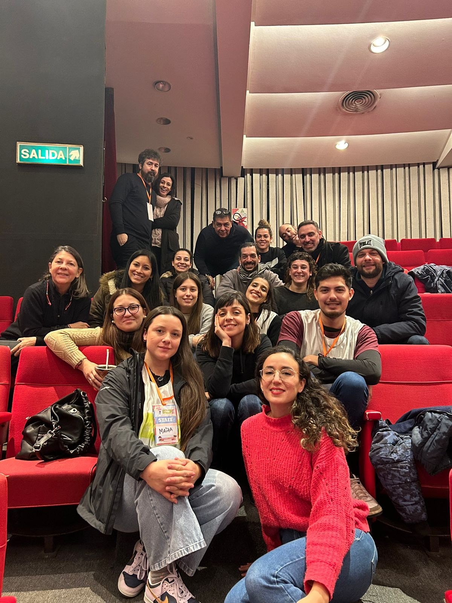
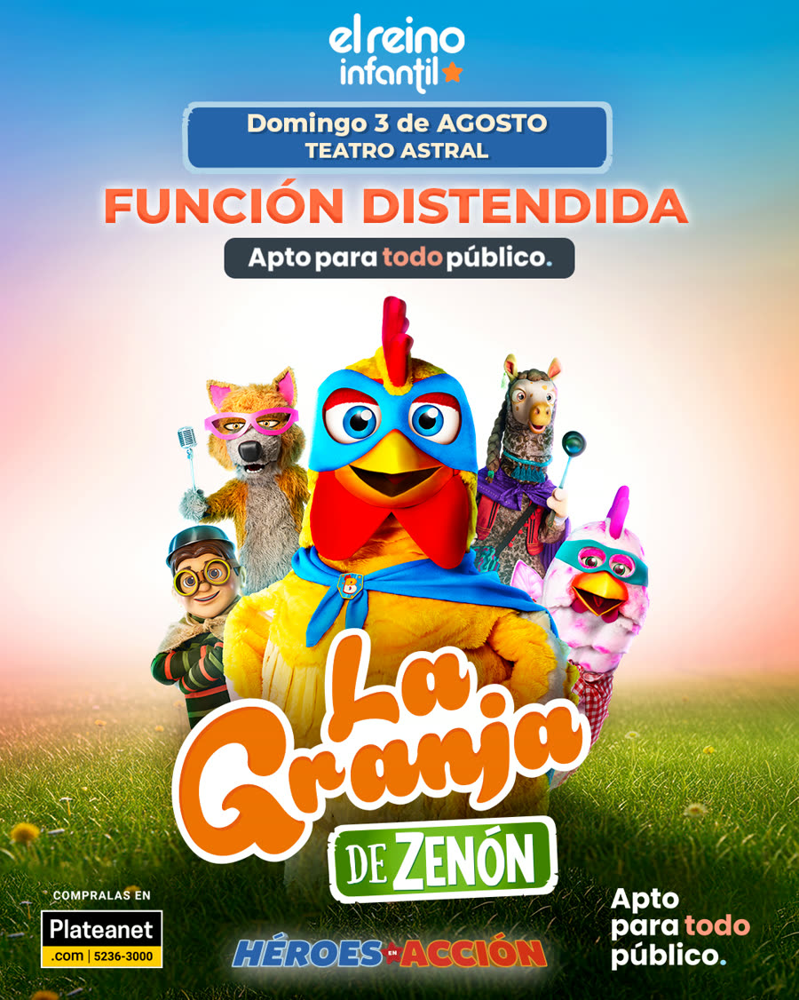

Nuestros servicios
Formación en introducción a la accesibilidad cultural

La capacitación ofrece una introducción a la accesibilidad cultural desde un enfoque de derechos. Se propone abrir un espacio de reflexión sobre las creencias y conceptos en torno a la discapacidad que nos atraviesan en nuestras prácticas cotidianas. La propuesta invita a un acercamiento al material teórico disponible y el intercambio de experiencias en el campo para construir herramientas que permitan pensar nuevas formas y propuestas accesibles.
Asesorías - Accesibilizá tu proyecto

Espacio de acompañamiento para que los proyectos culturales nazcan o se vuelvan accesibles para todos los públicos. A través de herramientas de gestión cultural y poniendo el foco en la accesibilidad cultural, buscamos aportar en el desarrollo de proyectos culturales aptos para todo público.
Este servicio integral incluye: adaptación técnica del contenido, armado de material anticipatorio, diseño de señalética con pictogramas, capacitación al equipo de producción y personal de sala y acompañamiento por parte de un equipo de salud mental previo y durante las funciones.
La Granja de Zenón